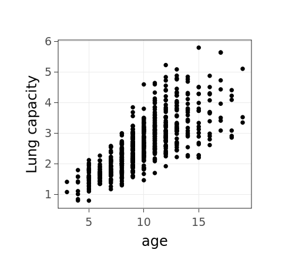

## Parsed with column specification: ## cols( ## id = col_double(), ## age = col_double(), ## fev = col_double(), ## height = col_double(), ## sex = col_character(), ## smoke = col_character() ## )
